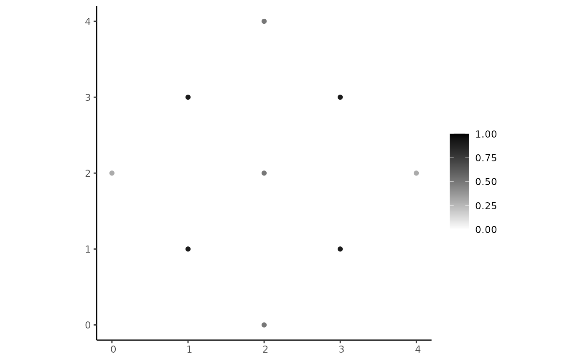
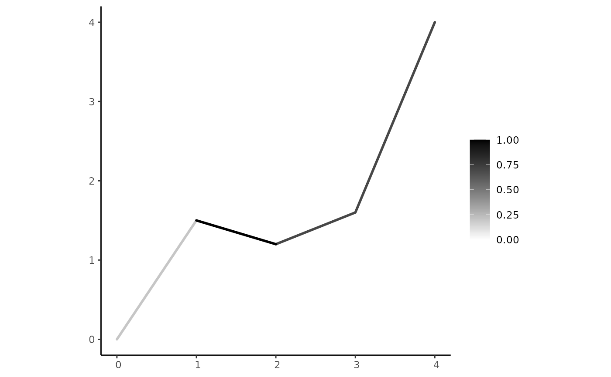
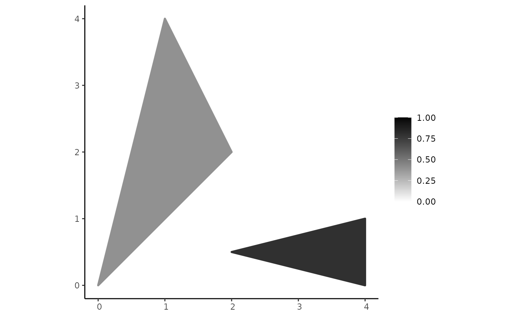
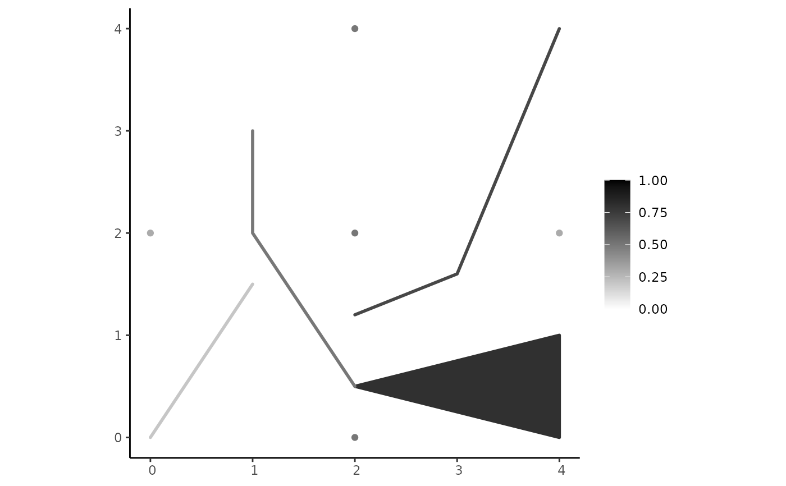
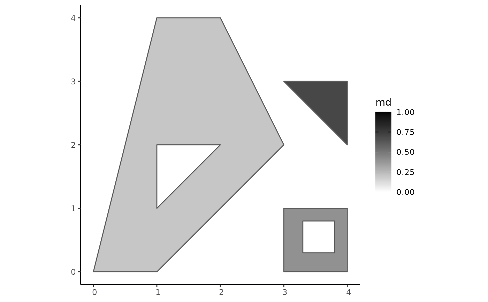

The fsr_plot() function (and the S4 method plot()) plots a pgeometry object.
Usage
fsr_plot(pgo, base_poly = NULL, add_base_poly = TRUE, low = "white", high = "black",
crs = NA, clip = FALSE, line_lwd = 1, region_lwd = 1, ...)
# S4 method for pgeometry,missing
plot(x, y, ...)Arguments
- pgo
A
pgeometryobject of any type.- base_poly
An
sfgobject of the typePOLYGONorMULTIPOLYGON. It can also be ansfcobject with only one element of the typePOLYGONorMULTIPOLYGON.- add_base_poly
A Boolean value that indicates whether
base_polywill added to the visualization.- low
A character value that indicates the color for the lowest membership degree (i.e., 0). Default is
"white".- high
A character value that indicates the color for the highest membership degree (i.e., 1). Default is
"black".- crs
A numerical value that denotes the coordinate reference system (i.e., EPSG code) of the visualization. Default is
NA.- clip
A Boolean value that indicates whether the boundaries of the components must be clipped by the
sfgobjectbase_poly(if it is notnull).- line_lwd
A numeric value that specifies the line width of linear components.
- region_lwd
A numeric value that specifies the line width of the boundaries of polygonal components.
- ...
<
dynamic-dots> Optional parameters. They can be the same as the parameters ofgeom_sf()function fromggplot2.- x
A
pgeometryobject of any type.- y
Not applicable.
Details
The fsr_plot() function uses a ggplot2 package to built the resulting plot. It receives a pgeometry object as input (if it is empty, an empty graphics
in obtained).
The low and high parameters are the colors for the minimum and maximum limits of the membership degrees. The
default colors are "white" and "black", respectively. Other colors can be given in the same way that colors are informed
to visualizations produced by the ggplot2 package.
It is possible to clip the geometric format of the components by using the parameter base_poly. The boundaries of this object
can also be included in the visualization if the parameter add_base_poly is TRUE.
Since the returned value is a ggplot object, it can be further be customized (see examples below).
Examples
library(sf)
pts <- rbind(c(0, 2), c(4, 2))
# Point components
pcp1 <- create_component(st_multipoint(pts), 0.3)
pcp2 <- create_component("MULTIPOINT((2 2), (2 4), (2 0))", 0.5)
pcp3 <- create_component("MULTIPOINT((1 1), (3 1), (1 3), (3 3))", 0.9)
# Line components
lcp1 <- create_component("LINESTRING(0 0, 1 1.5)", 0.2)
lcp2 <- create_component("LINESTRING(1 3, 1 2, 2 0.5)", 0.5)
lcp3 <- create_component("LINESTRING(2 1.2, 3 1.6, 4 4)", 0.7)
lcp4 <- create_component("LINESTRING(1 1.5, 2 1.2)", 1.0)
# Polygon components
rcp1 <- create_component("POLYGON((0 0, 1 4, 2 2, 0 0))", 0.4)
rcp2 <- create_component("POLYGON((2 0.5, 4 1, 4 0, 2 0.5))", 0.8)
# Creating spatial plateau objects
pp <- create_pgeometry(list(pcp1, pcp2, pcp3), "PLATEAUPOINT")
pl <- create_pgeometry(list(lcp1, lcp3, lcp4), "PLATEAULINE")
pr <- create_pgeometry(list(rcp1, rcp2), "PLATEAUREGION")
pcm <- create_pgeometry(list(pcp1, pcp2, lcp1, lcp2, lcp3, rcp2), "PLATEAUCOMPOSITION")
pcl <- create_pgeometry(list(pp, pr, pcm), "PLATEAUCOLLECTION")
# Displaying their textual representations
pp
#> [1] "PLATEAUPOINT ((MULTIPOINT ((0 2), (4 2)), 0.3), (MULTIPOINT ((2 2), (2 4), (2 0)), 0.5), (MULTIPOINT ((1 1), (3 1), (1 3), (3 3)), 0.9))"
pl
#> [1] "PLATEAULINE ((LINESTRING (0 0, 1 1.5), 0.2), (LINESTRING (2 1.2, 3 1.6, 4 4), 0.7), (LINESTRING (1 1.5, 2 1.2), 1))"
pr
#> [1] "PLATEAUREGION ((POLYGON ((0 0, 1 4, 2 2, 0 0)), 0.4), (POLYGON ((2 0.5, 4 1, 4 0, 2 0.5)), 0.8))"
pcm
#> [1] "PLATEAUCOMPOSITION (PLATEAUPOINT ((MULTIPOINT ((0 2), (4 2)), 0.3), (MULTIPOINT ((2 2), (2 4), (2 0)), 0.5)), PLATEAULINE ((LINESTRING (0 0, 1 1.5), 0.2), (LINESTRING (1 3, 1 2, 2 0.5), 0.5), (LINESTRING (2 1.2, 3 1.6, 4 4), 0.7)), PLATEAUREGION ((POLYGON ((2 0.5, 4 1, 4 0, 2 0.5)), 0.8)))"
pcl
#> [1] "PLATEAUCOLLECTION (PLATEAUPOINT ((MULTIPOINT ((0 2), (4 2)), 0.3), (MULTIPOINT ((2 2), (2 4), (2 0)), 0.5), (MULTIPOINT ((1 1), (3 1), (1 3), (3 3)), 0.9)), PLATEAUREGION ((POLYGON ((0 0, 1 4, 2 2, 0 0)), 0.4), (POLYGON ((2 0.5, 4 1, 4 0, 2 0.5)), 0.8)), PLATEAUCOMPOSITION (PLATEAUPOINT ((MULTIPOINT ((0 2), (4 2)), 0.3), (MULTIPOINT ((2 2), (2 4), (2 0)), 0.5)), PLATEAULINE ((LINESTRING (0 0, 1 1.5), 0.2), (LINESTRING (1 3, 1 2, 2 0.5), 0.5), (LINESTRING (2 1.2, 3 1.6, 4 4), 0.7)), PLATEAUREGION ((POLYGON ((2 0.5, 4 1, 4 0, 2 0.5)), 0.8))))"
# Plotting them
plot(pp)

plot(pl)

plot(pr)

plot(pcm)

plot(pcl)

if (FALSE) {
# Custom colors
fsr_plot(pr, low = "green", high = "blue")
# Changing the line width of line components
fsr_plot(pl, line_lwd = 2)
# Changing the line width of boundary lines of region components
fsr_plot(pr, region_lwd = 2)
# Changing the line width of boundary lines of region components and its color
fsr_plot(pr, region_lwd = 2, color = "blue")
# You can customize the whole visualization using ggplot
library(ggplot2)
fsr_plot(pp, size = 5) +
theme(legend.position = "none") +
theme(text=element_text(size=20, family = "serif", color = "black"),
axis.text=element_text(color="black")) +
scale_x_continuous(breaks = c(0, 1, 2, 3, 4)) +
scale_y_continuous(breaks = c(0, 1, 2, 3, 4))
}